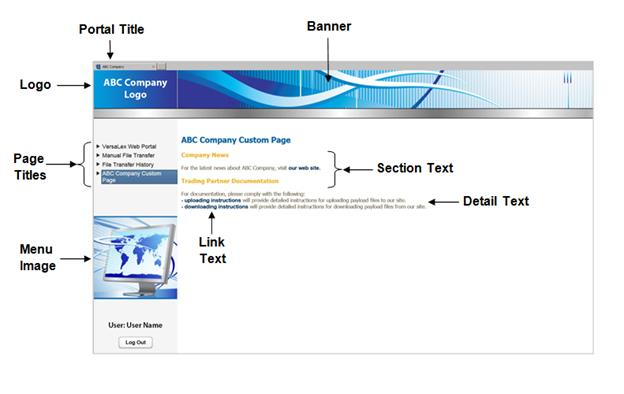

Local Listener Web Browser Service
/
Configuring VLPortal Web Browser service
Parent topic
:
Configuring VLPortal Web Browser service
Sample Web Portal Layout
This example displays how a web portal configuration would appear in Internet Explorer.
